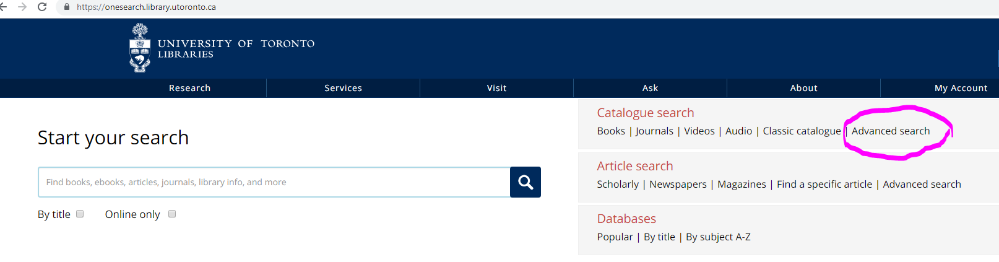

The main project's "Narrative" (found in the exhibit settings) include a substantive discussion of the story, and include the following text sections (1500 words):
The Library! 
It was a few weeks before my own marriage, during the days when I was still sharing rooms with Holmes in Baker Street, that he came home from an afternoon stroll to find a letter on the table waiting for him. I had remained indoors all day, for the weather had taken a sudden turn to rain, with high autumnal winds, and the Jezail bullet which I had brought back in one of my limbs as a relic of my Afghan campaign throbbed with dull persistence. With my body in one easy-chair and my legs upon another, I had surrounded myself with a cloud of newspapers until at last, saturated with the news of the day, I tossed them all aside and lay listless, watching the huge crest and monogram upon the envelope upon the table and wondering lazily who my friend's noble correspondent could be. "Here is a very fashionable epistle," I remarked as he entered. "Your morning letters, if I remember right, were from a fish-monger and a tide-waiter." "Yes, my correspondence has certainly the charm of variety," he answered, smiling, "and the humbler are usually the more interesting. This looks like one of those unwelcome social summonses which call upon a man either to be bored or to lie." He broke the seal and glanced over the contents.
"There was a paragraph amplifying this [marriage notice] in one of the society papers of the same week. Ah, here it is: 'There will soon be a call for protection in the marriage market, for the present free-trade principle appears to tell heavily against our home product. One by one the management of the noble houses of Great Britain is passing into the hands of our fair cousins from across the Atlantic. An important addition has been made during the last week to the list of the prizes which have been borne away by these charming invaders. Lord St. Simon, who has shown himself for over twenty years proof against the little god's arrows, has now definitely announced his approaching marriage with Miss Hatty Doran, the fascinating daughter of a California millionaire. Miss Doran, whose graceful figure and striking face attracted much attention at the Westbury House festivities, is an only child, and it is currently reported that her dowry will run to considerably over the six figures, with expectancies for the future. As it is an open secret that the Duke of Balmoral has been compelled to sell his pictures within the last few years, and as Lord St. Simon has no property of his own save the small estate of Birchmoor, it is obvious that the Californian heiress is not the only gainer by an alliance which will enable her to make the easy and common transition from a Republican lady to a British peeress.'" "Anything else?" asked Holmes, yawning. "Oh, yes; plenty. Then there is another note in the Morning Post to say that the marriage would be an absolutely quiet one, that it would be at St. George's, Hanover Square, that only half a dozen intimate friends would be invited, and that the party would return to the furnished house at Lancaster Gate which has been taken by Mr. Aloysius Doran. Two days later–that is, on Wednesday last–there is a curt announcement that the wedding had taken place, and that the honeymoon would be passed at Lord Backwater's place, near Petersfield. Those are all the notices which appeared before the disappearance of the bride."
"When did you first meet Miss Hatty Doran?" "In San Francisco, a year ago.“ "You were travelling in the States?" "Yes." "Did you become engaged then?" "No." "But you were on a friendly footing?" "I was amused by her society, and she could see that I was amused." "Her father is very rich?" "He is said to be the richest man on the Pacific slope." "And how did he make his money?" "In mining. He had nothing a few years ago. Then he struck gold, invested it, and came up by leaps and bounds." "Now, what is your own impression as to the young lady's–your wife's character?" The nobleman swung his glasses a little faster and stared down into the fire. "You see, Mr. Holmes," said he, "my wife was twenty before her father became a rich man. During that time she ran free in a mining camp and wandered through woods or mountains, so that her education has come from Nature rather than from the schoolmaster. She is what we call in England a tomboy, with a strong nature, wild and free, unfettered by any sort of traditions. She is impetuous–volcanic, I was about to say. She is swift in making up her mind and fearless in carrying out her resolutions. On the other hand, I would not have given her the name which I have the honour to bear"–he gave a little stately cough–"had not I thought her to be at bottom a noble woman. I believe that she is capable of heroic self-sacrifice and that anything dishonourable would be repugnant to her."
"And now, Lord St. Simon, I think that I have nearly all my data. May I ask whether you were seated at the breakfast-table so that you could see out of the window?" "We could see the other side of the road and the Park [Hyde Park]." "Quite so. Then I do not think that I need to detain you longer. I shall communicate with you." "Should you be fortunate enough to solve this problem," said our client, rising. "I have solved it." "Eh? What was that?" "I say that I have solved it." "Where, then, is my wife?" "That is a detail which I shall speedily supply."
"Then I'll tell our story right away," said the lady. "Frank here and I met in '84, in McQuire's camp, near the Rockies, where pa was working a claim. We were engaged to each other, Frank and I; but then one day father struck a rich pocket and made a pile, while poor Frank here had a claim that petered out and came to nothing. The richer pa grew the poorer was Frank; so at last pa wouldn't hear of our engagement lasting any longer, and he took me away to 'Frisco. Frank wouldn't throw up his hand, though; so he followed me there, and he saw me without pa knowing anything about it. It would only have made him mad to know, so we just fixed it all up for ourselves. Frank said that he would go and make his pile, too, and never come back to claim me until he had as much as pa. So then I promised to wait for him to the end of time and pledged myself not to marry anyone else while he lived. 'Why shouldn't we be married right away, then,' said he, 'and then I will feel sure of you; and I won't claim to be your husband until I come back?' Well, we talked it over, and he had fixed it all up so nicely, with a clergyman all ready in waiting, that we just did it right there; and then Frank went off to seek his fortune, and I went back to pa.
[Frank is thought dead, so Miss Doran marries Lord St. Simon]
"Still, if I had married Lord St. Simon, of course I'd have done my duty by him. We can't command our love, but we can our actions. I went to the altar with him with the intention to make him just as good a wife as it was in me to be. But you may imagine what I felt when, just as I came to the altar rails, I glanced back and saw Frank standing and looking at me out of the first pew. I thought it was his ghost at first; but when I looked again there he was still, with a kind of question in his eyes, as if to ask me whether I were glad or sorry to see him. I wonder I didn't drop. I know that everything was turning round, and the words of the clergyman were just like the buzz of a bee in my ear. I didn't know what to do. Should I stop the service and make a scene in the church? I glanced at him again, and he seemed to know what I was thinking, for he raised his finger to his lips to tell me to be still. Then I saw him scribble on a piece of paper, and I knew that he was writing me a note. As I passed his pew on the way out I dropped my bouquet over to him, and he slipped the note into my hand when he returned me the flowers. It was only a line asking me to join him when he made the sign to me to do so. Of course I never doubted for a moment that my first duty was now to him, and I determined to do just whatever he might direct.
"When I got back I told my maid, who had known him in California, and had always been his friend. I ordered her to say nothing, but to get a few things packed and my ulster ready. I know I ought to have spoken to Lord St. Simon, but it was dreadful hard before his mother and all those great people. I just made up my mind to run away and explain afterwards. I hadn't been at the table ten minutes before I saw Frank out of the window at the other side of the road. He beckoned to me and then began walking into the Park. I slipped out, put on my things, and followed him. Some woman came talking something or other about Lord St. Simon to me–seemed to me from the little I heard as if he had a little secret of his own before marriage also–but I managed to get away from her and soon overtook Frank. We got into a cab together, and away we drove to some lodgings he had taken in Gordon Square, and that was my true wedding after all those years of waiting. Frank had been a prisoner among the Apaches, had escaped, came on to 'Frisco, found that I had given him up for dead and had gone to England, followed me there, and had come upon me at last on the very morning of my second wedding […] It was awful to me to think of all those lords and ladies sitting round that breakfast-table and waiting for me to come back.